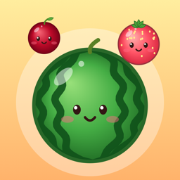

Fruity Tumble
How do I play?
Drag left and right to aim, then let go to drop the fruit. Two of the same fruit merge into a bigger one, all the way up to the watermelon. Don't let fruit stay above the red line for 3 seconds, or the game is over. You can see the steps any time with the ? button on the home screen.
Where is my game saved? Can I continue later?
Your game saves itself on your iPhone after every move, and when you leave the app. Tap Continue on the home screen to pick up where you left off. Progress is stored only on this iPhone: it doesn't sync between devices, and deleting the app deletes your progress.
How do I get coins and stars?
Coins come from making bigger fruit (persimmon and up), finishing games, daily rewards, missions and discovering new fruit. Stars come from making apples and bigger fruit and from your score at the end of each game, and they're spent decorating your house. There's nothing to buy: everything is earned by playing.
What do the boosters do?
Swap changes the fruit you're holding, Shake shuffles the box, Smash removes a fruit you tap, Grow makes a fruit you tap one size bigger, and Bomb clears every cherry and strawberry.
When is the Halloween event?
Spooky Fruit Night runs every year from October 15 to November 2, with a free gift, the Spooky fruit skin and the Haunted House theme.
I can't hear any sounds
Fruity Tumble follows your iPhone's ring/silent switch, so flip it to ring. Sound and vibration can also be switched on and off in the game's Settings.
How do I start over?
Home screen → Settings → Reset progress. This clears your scores, coins, boosters, saved game and other progress. Sound and vibration settings stay as they are.